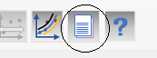
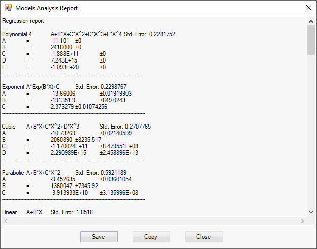

Text report of the analysis regression can be generated by selecting Analysis > Generate Text Report from the menu, Alt + T keys or button Generate results report from the tool strip:

The regression report dialog is shown:

The report can be saved in text file or copied as text to the clipboard.